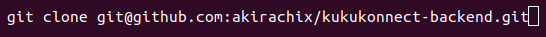
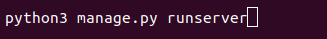
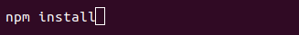
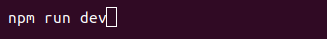
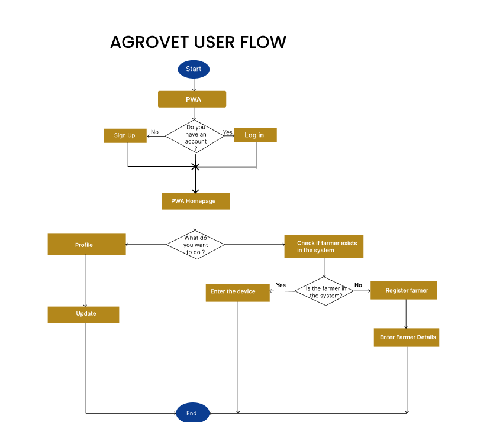
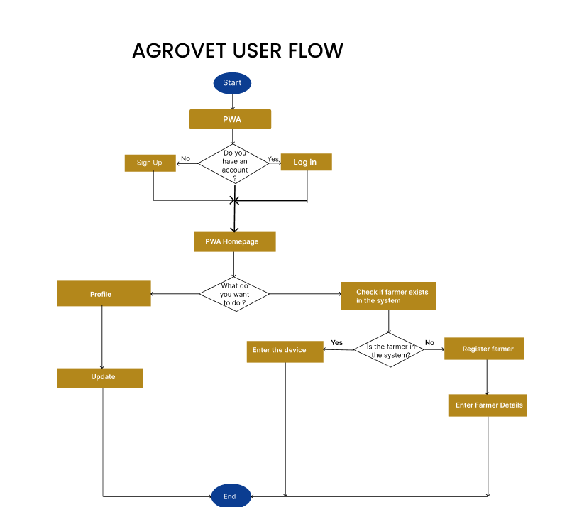
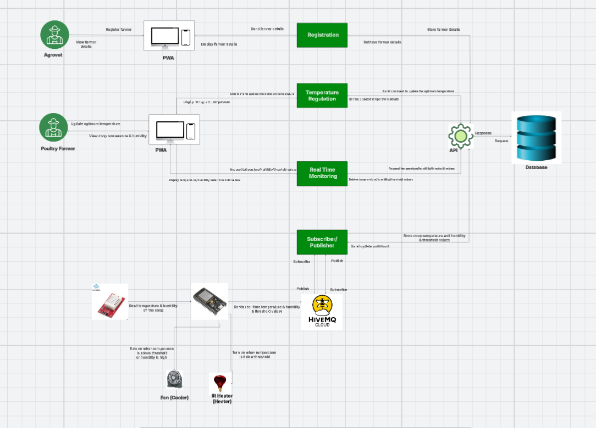
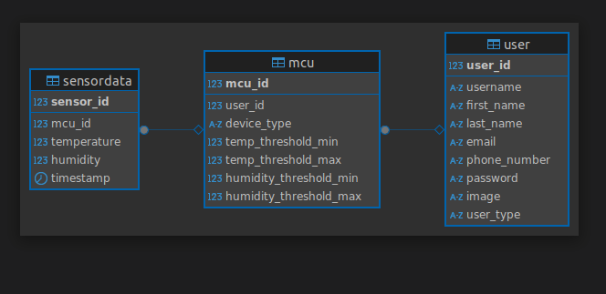

KukuKonnect Documentation
Version History
Version 1.0 is the initial documentation for KukuKonnect, a web-hosted IoT platform for Kenyan poultry farmers to monitor and regulate coop conditions (temperature, humidity) via a Progressive Web App (PWA). Covers setup, usage, database schema, deployment, QA process and API integration.It has a cloud-hosted Django backend, Next.js PWA frontend, and ESP32 IoT device. For proprietary details or custom endpoints, contact the development team.Overview
KukuKonnect is an IoT-enabled platform designed to empower Kenyan poultry farmers by monitoring and automatically regulating temperature and humidity in chicken coops. Using ESP32 microcontrollers and DHT22 sensors, it ensures optimal conditions to boost chicken survival rates, reduce losses, and enhance productivity. Farmers access data via a Progressive Web App (PWA) dashboard, with agrovets handling initial device registration and onboarding. This documentation provides end-to-end guidance for setup, operation, and maintenance of the KukuKonnect system, from hardware to data visualization(dashboard) and API interactions.Key Features
- Real-Time Monitoring: Utilizes ESP32 microcontrollers with DHT22 sensors to provide live temperature and humidity data from poultry coops, displayed on a Progressive Web App (PWA).
- Automated Regulation: Triggers relays to activate fans or heaters when sensor data breaches farmer-defined thresholds, ensuring optimal coop conditions.
Getting Started
Prerequisites
- Hardware: ESP32 microcontroller, DHT22 sensor, relay modules for actuators (fans/heaters), power supply.
- Software: Next js (for frontend dev), Python 3.10+ (for backend), PostgreSQL 14+.
- Network: Stable Wi-Fi or 4G for IoT data transmission; Heroku/Vercel for hosting (as per deployment).
Installation/Setup
Hardware Assembly:
- Connect DHT22 to ESP32 (VCC to 3.3V, GND to GND, Data to GPIO4).
- Wire relays to GPIO5/18 for fan/heater control.
- Flash ESP32 with Arduino IDE using MQTT libraries (PubSubClient) for data publishing to broker (HiveMQ).
Backend:
- Clone repository 
- Install dependencies
- Run migrations
- Run Server 


Frontend:
- Clone repository
- Install dependencies 
- Run Server 

 

System Overview
System Architecture Diagram
Data Flow: Sensor → ESP32 → MQTT → Backend → PWA
Database
Type
PostgreSQL
Schema
- Users:Holds the users(farmers,Agrovets)details
- Sensor_data:The data that is being sent from the sensors(Temperature,Humidity)
- MCU:Description of the device properties
Entity Relationship Diagram
Code Standards
Frontend (Next.js, TypeScript, Tailwind)
- Components: Always use functional components for consistency and performance.
- Naming:
- camelCase for variables and functions
- PascalCase for component names
- SCREAMING_SNAKE_CASE for constants
- Files: One component per file. Group files by feature/module for maintainability.
- Testing: Use Jest and React Testing Library for unit tests; add tests for each new component or logic.
- Styling: Tailwind CSS for all styling. Avoid inline styles unless absolutely necessary.
Backend (Django, DRF)
- Naming:
- snake_case for variables and functions
- PascalCase for classes and models
- Serializers/Views: Place each in its own file unless they are closely related.
- Testing: Use Django’s built-in test runner (
python manage.py test) and maintain high coverage.
General Standards
- Linting:
- Prettier + ESLint for frontend code
- flake8 and black for backend code
- Pull Requests:
- Write clear summaries for every PR
- Link related issues (use Fixes #issue_num)
- Always request at least one review before merging
- Documentation:
- Document components, functions, and modules with JSDoc (frontend) or docstrings (backend)
- Update README and feature docs for significant changes
Best Practices
- Keep functions and components small and focused.
- Prefer composition over inheritance.
- Avoid commented-out code in committed files.
- Refactor and remove unused code regularly.
- Always run lint and tests before pushing or merging.
Frontend
Language and Frameworks
Language
- TypeScript: For type safety and scalability.
Frameworks
- Next.js: For server-side rendering and static site generation.
- Tailwind CSS: For responsive, utility-first styling.
Routing
- File-Based Routing: Defined in
/pages(/pages/dashboard.tsx) with dynamic routes.
Folder Structure
/src/components: Reusable UI elements (e.g.,RegistrationForm.tsx)./pages: Route-specific pages (e.g.,Dashboard.tsx,Catalog.tsx)./utils: API call logic./public: Images.
Testing
- Jest and ts-jest: Unit tests (e.g.,
test/components/RegistrationForm.test.tsx). - Run Tests:
npm test.
Deployment
- Platform: Vercel.
- Instructions:
- Install dependencies:
npm install. - Build project:
npm run build. - Deploy:
vercel --prodor push to GitHub repo linked to Vercel. - Verify at https://kukukonnect.vercel.app.
- Install dependencies:
Backend
Language and Frameworks
Language
- Python: For robust and scalable backend development.
Frameworks
- Django: High-level, secure web framework with built-in ORM and admin panel.
Routing
- URL Routing: Defined in
urls.py(e.g.,path('api/register/', views.register, name='register')) with dynamic routes.
Folder Structure
/kukukonnect-backend/kukukonnect: Main app directory/views: Business logic/models: Database models/serializers: Data serialization
/static: Static files (e.g., images).
Dependencies
- Django REST Framework (DRF): For building RESTful APIs.
Testing
- Django Test Framework: Unit tests (e.g.,
kukukonnect/tests.py). - Run Tests:
python manage.py test.
Deployment
- Platform: Heroku.
- Instructions:
- Install dependencies:
pip install -r requirements.txt. - Apply migrations:
python manage.py migrate. - Deploy: Use Heroku CLI with
git push heroku mainor connect GitHub repo. - Verify at https://kukukonnect-6aa0bdb81a64.herokuapp.com.
- Install dependencies:
API Documentation
Swagger UI provides interactive docs for the REST API, generated via OpenAPI spec.
Swagger UI: https://kukukonnect-6aa0bdb81a64.herokuapp.com/api/schema/swagger-ui/
Schema ReDoc: https://kukukonnect-6aa0bdb81a64.herokuapp.com/api/schema/redoc/
Postman Documentation: https://kukukonnect-6aa0bdb81a64.herokuapp.com/api/schema/redoc/
Hardware Device
Hardware Components
The KukuKonnect IoT device comprises the following components, designed to monitor and regulate environmental conditions in poultry coops through sensors and actuators:
ESP32 Microcontroller: A low-cost, low-power system-on-chip (SoC) with dual-core processing, Wi-Fi, and Bluetooth capabilities for robust IoT communication and control of actuators.
DHT22 Sensor: A digital temperature and humidity sensor with high accuracy (±0.5°C for temperature, ±2-5% for humidity) for real-time environmental monitoring.
Relay Modules: Two electromechanical switches (5V, single-channel) to control actuators (fan and heater) based on sensor data thresholds, enabling automated regulation of coop conditions.
Fan (Ventilation): A 12V DC brushless fan to provide cooling and air circulation, activated when temperature or humidity exceeds farmer-defined thresholds.
Heater: A 220V AC ceramic heating element (or 12V DC option for off-grid setups) to warm the coop when temperatures fall below optimal levels.
Power Supply: A power source for the ESP32 and relays, with separate power sources for the fan (12V DC) and heater (220V AC or 12V DC).
Additional Components
- Breadboard.
- Jumper wires for connections.
- Enclosure: A weatherproof casing to protect the device in outdoor or humid coop environments, with sealed openings for actuator wiring.
Hardware Specifications
| Component | Specification |
|---|---|
| ESP32 | Dual-core, 240 MHz, 4MB Flash, Wi-Fi 802.11 b/g/n |
| DHT22 | Temperature: -40°C to 80°C, Humidity: 0-100% RH |
| Relay Module | 5V, 10A/250VAC, single-channel (x2 for fan and heater) |
| Fan | 12V DC, 0.2A, 120mm, 2000 RPM, 80 CFM airflow |
| Heater | 220V AC, 100W PTC ceramic (or 12V DC, 50W option) |
| Power Supply | 5V USB or 3.7V LiPo (1000mAh+) for ESP32/relays; 12V DC for fan; 220V AC or 12V DC for heater |
Notes on Fan and Heater
Fan: The 12V DC brushless fan is selected for energy efficiency, quiet operation (to avoid disturbing poultry), and high airflow to ventilate coops effectively. Its 80 CFM capacity ensures rapid cooling and humidity reduction.
Heater: The 220V AC PTC (Positive Temperature Coefficient) ceramic heater is chosen for safety (self-regulating to prevent overheating) and reliability. A 12V DC heater option is available for off-grid farms, compatible with solar-powered systems.
Heater: The 220V AC PTC (Positive Temperature Coefficient) ceramic heater is chosen for safety (self-regulating to prevent overheating) and reliability. A 12V DC heater option is available for off-grid farms, compatible with solar-powered systems.
Hardware Assembly
Connect the DHT22 Sensor:
- Wire VCC to ESP32 3.3V pin.
- Wire GND to ESP32 GND pin.
- Wire Data pin to ESP32 GPIO4.
- Add a 4.7kΩ pull-up resistor between VCC and Data pins for stable readings.
Connect Relay Modules:
- Fan Relay:
- Wire VCC to ESP32 5V (or VIN if using USB power).
- Wire GND to ESP32 GND.
- Connect signal pin to ESP32 GPIO5 for fan control.
- Connect the relay’s NO (Normally Open) terminal to the fan’s positive wire and the fan’s negative wire to a 12V DC power supply ground.
- Heater Relay:
- Wire VCC to ESP32 5V.
- Wire GND to ESP32 GND.
- Connect signal pin to ESP32 GPIO18 for heater control.
- For 220V AC heater: Connect the relay’s NO terminal to the heater’s live wire; connect the heater’s neutral wire directly to the 220V AC mains.
- For 12V DC heater: Connect the relay’s NO terminal to the heater’s positive wire and the negative wire to a 12V DC power supply ground.
Power Supply Setup:
- Connect a 5V USB power source or a 3.7V LiPo battery (with a charging module) to the ESP32 and relay modules to ensure continuous operation.
- For the fan: Use a 12V DC power supply (e.g., battery or adapter) to power the fan through the relay.
- For the heater: Use a 220V AC mains supply for standard heaters or a 12V DC power source for off-grid heaters. Ensure separate power circuits for high-voltage (heater) and low-voltage (ESP32, fan) components to prevent interference.
- Verify stable power to avoid brownouts during Wi-Fi transmission or actuator operation.
Fan and Heater Installation:
- Fan: Mount the 120mm fan on a coop ventilation opening to maximize airflow. Use a protective grille to prevent poultry contact and a dust filter to maintain efficiency in dusty environments.
- Heater: Install the heater in a safe, well-ventilated area of the coop, at least 30cm from flammable materials (e.g., bedding). Use a heat-resistant mount and ensure the heater is grounded (for 220V AC models).
- Position both actuators to avoid interfering with the DHT22 sensor’s readings (e.g., place the sensor away from direct airflow or heat).
Enclosure:
- Place the ESP32, DHT22, and relay modules in a weatherproof IP65-rated enclosure with openings for sensor exposure and actuator wiring.
- Route fan and heater cables through sealed glands to maintain weatherproofing.
- Secure the enclosure in the poultry coop, ensuring the DHT22 sensor is positioned to capture accurate environmental readings (avoid direct sunlight, heat from the heater, or airflow from the fan).
Deployment
Frontend Deployment
- Platform: Vercel
- Branch: Auto-deployment from main
- Environment Variables: Managed securely via .env in Vercel dashboard
- Build & Preview: Each push triggers preview builds for PRs and deploys on merge to main
Backend Deployment
- Platform: Django REST API deployed on Heroku
- Environment Variables: Configured in Heroku dashboard for security
- Scaling: Automatic scaling via Heroku dynos for increased demand
CI/CD Pipeline
- Tool: GitHub Actions
- Pre-Deployment: All codebases run tests, build, and lint checks before deploy
- Automation: Automatic deployment on merge to main
- Status: Build and test status visible in PRs and repository dashboard
Security
Authentication
- JWT: Token-based auth for API access.
Data Encryption
- HTTPS: TLS for transport.
- AES: Encrypts sensitive data (e.g., passwords).
Quality Assurance
Code Maintenance
- Branching: Use
mainfor production,developfor features,feature/*for tasks. - Commits: Follow Conventional Commits (e.g, feat: add registration form).
- Review: PRs require 5 approvals via GitHub.
- Pull Requests: Write clear summary for each PR.
QA Process
- Unit Tests: Jest for React and Pytest for Django (e.g.,
npm test). - Integration Tests: Postman for API (e.g.,
GET /api/users). - Integration Tests: Postman for pre-scripted tests. The primary goal is to validate the functionality, performance, and reliability of the software with minimal human intervention.
- Manual Testing: Verify PWA functionalities.
- CI/CD Checks: GitHub Actions runs tests, lints (ESLint), and deploys only on pass.
Glossary
- PWA: Progressive Web App for offline use.
- JWT: JSON Web Token for authentication.